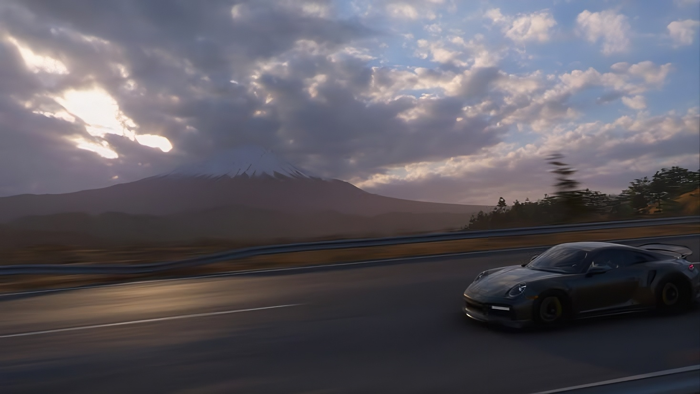
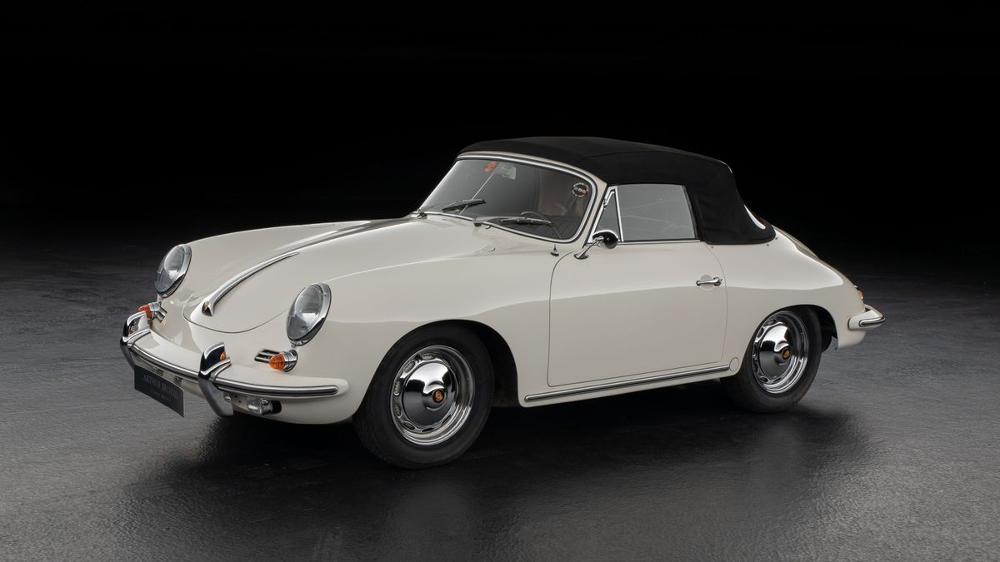

1948
Awal mula
Porsche 356 menjadi mobil produksi pertama yang membawa nama Porsche, meletakkan fondasi bagi filosofi mobil sport yang khas.


Lebih dari tujuh dekade gagasan, rekayasa, dan keyakinan bahwa sebuah mobil sport harus membuat setiap perjalanan tak terlupakan.
“Mobil sport yang sempurna tidak sekadar dibangun. Ia terus-menerus diimajinasikan kembali.”Porsche Experience — Konsep Editorial
Dari ide mobil sport pertama hingga menjadi simbol performa global, perjalanan ini terus berkembang.
Porsche 356 menjadi mobil produksi pertama yang membawa nama Porsche, meletakkan fondasi bagi filosofi mobil sport yang khas.
911 memulai debutnya, memperkenalkan siluet dan tata letak rekayasa yang akan menjadi inti identitas Porsche.

Taycan menandai langkah besar menuju performa serba listrik, sambil membawa DNA olahraga merek ini ke era berikutnya.

Desain, teknologi, dan pemikiran motorsport terus membentuk interpretasi baru dari mobil sport modern.

Tiga gagasan abadi yang menghubungkan warisan masa lalu dengan generasi performa berikutnya.
Bentuk mengikuti fungsi, sementara setiap garis berkontribusi pada identitas yang tak bisa disalahartikan.
Mempertanyakan konvensi dan menyempurnakan detail adalah bagian dari pencarian kemajuan yang tak henti.
Kompetisi memberikan lingkungan yang menuntut untuk belajar, menguji, dan berinovasi.

Temukan model-model yang membawa semangat ini ke depan dan cari pengalaman yang terasa tepat untukmu.
Jelajahi Model